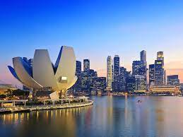

First Names: Simphiwe Gift
Last Name: Nkuna
Title: MR
About me
Young vigorous, hardworking, and self-motivated candidate with a Bachelor of Technology in Electrical Engineering, currently pursuing Maters in Engineering (MEng), Electrical. Flexible under pressure or deadlines, reliable (high discipline and timekeeping), and a strong team player.With a demonstrated history of working in the higher education industry (TUT) as a lecture/lab assistant (2 years). Adequate ability of research and report writing this is based on an 11-month experience as a student researcher in a research and development department.My City
Other places to visit
Johannesburg, South Africa's biggest city and capital of Gauteng province, began as a 19th-century gold-mining settlement. Its sprawling Soweto township was once home to Nelson Mandela and Desmond Tutu. Mandela’s former residence is now the Mandela House museum. Other Soweto museums that recount the struggle to end segregation include the somber Apartheid Museum and Constitution Hill, a former prison complex.My City Background Information
It is situated in the Eastern part of South Africa and is the capital Province. The city serves as a gateway to some of the best eco- and adventure activities in Southern Africa and with its moderate climate, it becomes the preferred tourist destination all year round. Our sub-tropical fruits (like mangos, avocados, oranges, lemons, litchis and bananas) is a huge drawing card for visitors and during spring-time the blossoms of orange trees can be smelt for kilometres. For shopping enthusiasts the city offers world class shopping malls, casinos and entertainment venues with air conditioning systems. This creates excellent opportunities for prospective investors and businesses to establish themselves in the area.Contact Details
07226571936
nkunasimphiwe123@gmail.com
Adress
115 Luster House114 Goud St
Johanesburg